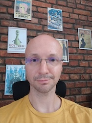
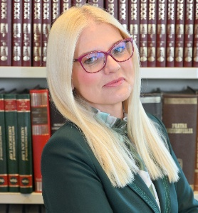

Projektni tim
Sandi Ljubić
Prof. dr. sc. Sandi Ljubić, voditelj projekta, ima bogato iskustvo u području HCI. U svom znanstvenostručnom radu, većinom se fokusira na empirijski pristup području interakcije čovjeka i računala, s posebnim naglaskom na domenu mobilnih aplikacija, metode unosa teksta, korištenje senzora za obogaćivanje interakcije, prediktivno modeliranje i vrednovanje interaktivnih sustava te inženjerstvo upotrebljivosti. U ulozi voditelja projekta, organizira, nadgleda i sudjeluje u svim fazama i aktivnostima projekta.

Alen Salkanović
Alen Salkanović je doktorand koji istražuje područje interakcije čovjeka i računala, s posebnim osvrtom na mobilnu domenu i ulogu osjetila u augmentaciji interakcije s mobilnim uređajima. Njegov doktorski rad u skladu je s ciljevima projekta, a bavi se biometrijskim odrednicama potpisa i rukopisa koji se izvode na zaslonima osjetljivima na dodir. Radi na implementaciji eksperimentalnog postava s fuzijom senzora, organizaciji i provedbi eksperimenata te razvoju i vrednovanju DL modela za prepoznavanje korisnika.
Luka Batistić
Dr. sc. Luka Batistić doktorirao je na istraživanju primjene strojnog učenja i umjetne inteligencije u području interakcije čovjeka i računala, konkretno na temi sučelja mozak-računalo. S obzirom na svoje iskustvo u provođenju empirijskih istraživanja u području HCI, analizi vremenskih signala te primjeni metoda AI, involviran je i u pripremi eksperimenata za prikupljanje podataka i u fazi suradnog razvoja i vrednovanja modela dubokog učenja za prepoznavanje korisnika.

Ivan Štajduhar
Prof. dr. sc. Ivan Štajduhar vodi Laboratorij za umjetnu inteligenciju i ima bogato iskustvu u teoretskom i prkatičnom radu s modelima stronog i dubokog učenja. Njegovo istraživačko područje primarno obuhvaća primjenu AI metoda u biomedicinskim podacima / slikama. On savjetovatuje projektni tim u odabiru arhitektura neuronskih mreža, metodama validacije te interpretaciji rezultata. Njegova uloga posebno je važna u potvrđivanju znanstvene rigoroznosti i pouzdanosti rezultata.

Ana Pošćić
Prof. dr. sc. Ana Pošćić je profesorica i predstojnica Katedre za europsko javno pravo na Sveučilištu u Rijeci. Njezin rad povezuje pravo EU tržišnog natjecanja s novim područjima poput umjetne inteligencije i održivosti, adresirajući regulatorne izazove na digitalnim tržištima. Sudjeluje kao savjetnica za pravne i etičke aspekte istraživanja, osobito u dijelu koji se odnosi na zaštitu biometrijskih podataka te pristanke sudionika za sudjelovanje u eksperimentu.

Žiga Emeršič
Doc. dr. sc. Žiga Emeršič, s Fakulteta za računarstvo i informatiku Sveučilišta u Ljubljani, renomirani je stručnjak u području biometrije s velikim iskustvom korištenja tehnika strojnog / dubokog učenja u tom području. S obzirom na svoju ekspertizu, posebno je aktivan u fazi predlaganja, testiranja i vrednovanja različitih arhitektura neuronskih mreža i ostalih metoda u postupku razvoja modela za prepoznavanje korisnika zasnovano na potpisu i rukopisu.